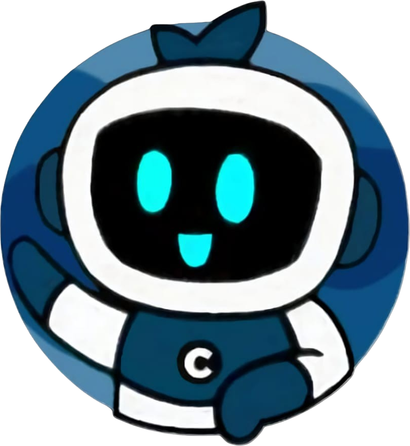

Olá, seja bem-vindo(a)

Temos diversas possibilidades para inovar o seu dia!
Venha conhecer nosso ChatBot. Com o intuito de explicar o projeto Radar Wave introduzimos uma conversa com uma IA pre-programada para explicar a você como nosso projeto funciona. Além disso, nossa IA é muito interativa e dinâmica até certo ponto. Afinal, nossa IA ainda é limitada, mas nada que vai impedir sua experiência de aproveitar o projeto.
Agradecemos de coração a todos os nossos patrocinadores. Seu apoio é vital para o nosso sucesso e nos impulsiona a alcançar grandes objetivos.
Este projeto é patrocinado pela Lookat, especialistas em marketing digital e influenciadores. Quer expandir sua marca? Nós conectamos você ao público certo.

Transporte escolar e para viagens! Garantimos segurança e conforto com uma frota moderna. Faça suas viagens inesquecíveis com a Translider!

No Ateliê Edi Ferreira, criamos peças únicas e personalizadas com o toque artesanal que você merece. Acessórios e decoração feitos sob medida para refletir o seu estilo.
No Studio Daniela Barcelos, oferecemos tratamentos de beleza e estética personalizados para realçar sua melhor versão.
Na JDL, oferecemos serviços de limpeza e corte de eucalipto sob medida, garantindo ambientes limpos e natureza renovada, com excelência e dedicação.

No Açaí do Keke, você encontra o açaí mais cremoso e delicioso, com diversas opções de acompanhamentos frescos. Venha se refrescar e se energizar com uma explosão de sabores!
Kimberly Brasil Campos, quero expressar minha sincera gratidão pelo seu apoio. Sua ajuda foi fundamental para o desenvolvimento do nosso projeto
Bárbara Brasil, somod extremamente gratos pelo seu apoio. Sua generosidade e doações foram essenciais para a apresentação de nosso projeto.
Giovani Ferraz, somos grato pelo seu apoio. Sua contribuição foi fundamental ajudando a nós para que nossa e sua feira fosse ótima.
No MC Lanches, oferecemos lanches saborosos e frescos, entregues com rapidez e carinho. Satisfaça seu apetite com a conveniência do nosso delivery!
Além disso, temos um jogo feito por nós mesmos, alunos, onde mostramos como funciona a visão de um submarino em baixo do oceano e a importancia de um sonar. O jogo é muito divertido e dinâmico, esperamos que goste do nosso jogo.
Jogo disponível apenas para computadores